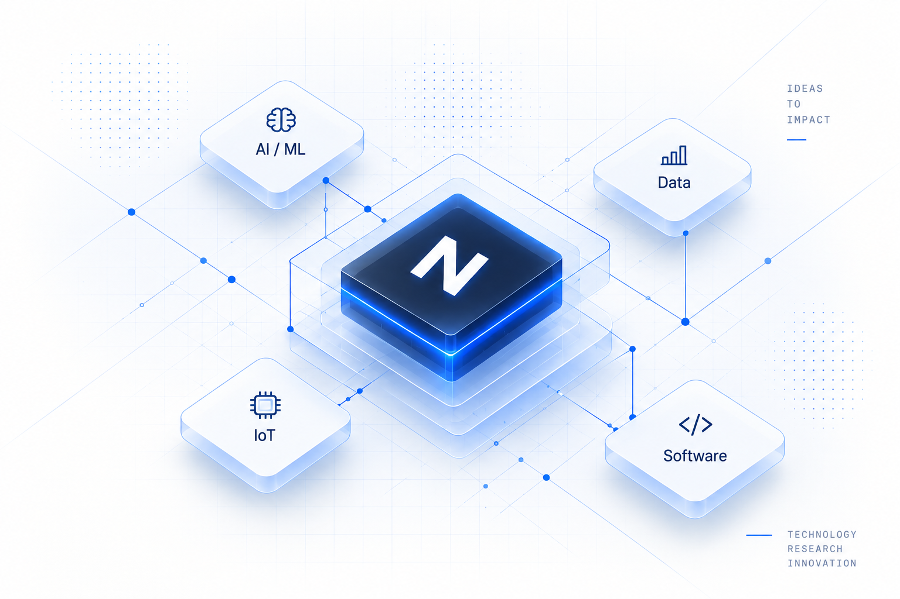

01
Academic Solutions
Technology support for diploma, degree and postgraduate work.
Technology solutions for students, researchers, startups and businesses — from ideas and prototypes to research implementation and real-world systems.

Projects, prototypes, software and technical guidance.
Implementation, experimentation, analysis and documentation.
Automation, AI, IoT, software and business technology.
Practical technology across academic, research and industry-oriented work.
Technology support for diploma, degree and postgraduate work.
Research implementation, experimentation, documentation and publication support.
Computer vision, predictive analytics, deep learning and GenAI.
Web apps, dashboards, APIs and custom business software.
Connected systems, sensors, ESP32, Raspberry Pi and embedded development.
Process automation, control systems and smart robotics.
Monitoring, automation, analytics and practical technology systems.
Custom internal tools, dashboards and workflow technology.
Prototype and MVP development for early-stage ideas.
We help translate research questions into implementable systems and documented technical work.
Technical implementation aligned with the research requirement.
Prototype systems for controlled experimentation and evaluation.
Models, datasets, evaluation pipelines and experiments.
Data preparation, analysis and result interpretation.
Simulation and prototype development for technical validation.
Technical documentation and publication support without guarantees.
From intelligent automation to custom software and connected systems, NextGenTech helps turn technology ideas into practical solutions.
Explore project directions across AI, IoT, software, data, robotics, research and industry. Verified repositories and metrics can be added later.
AI / ML · Intermediate · Research
IoT · Beginner · Industry
Computer Vision · Advanced · Industry
Data Science · Intermediate · Research
Robotics · Advanced · Industry
Build around the real requirement, not just the technology.
Experiment, evaluate and document technical work.
From discovery and planning to testing, documentation and delivery.
A professional student technology community for people interested in technology, research, innovation and leadership.
Talk to NextGenTech about an academic project, research system, software product, AI/ML solution, IoT system or industrial technology requirement.